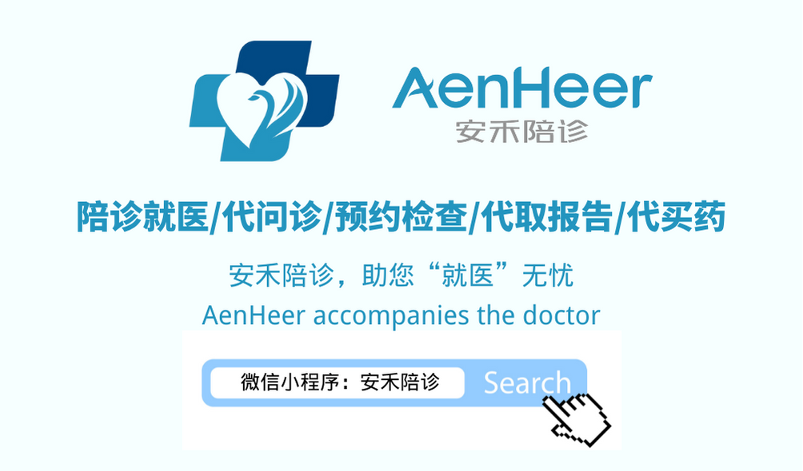

时间：2021-07-07 访问量：1989
什么是陪诊：
陪诊员非本次就诊人员，陪同就诊人员进行病情诊断或治疗称之为陪诊，一般为无病人员陪同患病人员一起去医院就诊。陪诊员代替挂号、排队、送取报告、缴费等，帮助患者省去很多时间和精力。
什么是陪诊员：
陪诊员也叫陪诊师，就是陪同他人就医的人员，服务群体:老人、孕妇、宝妈、异地就医患者，不想浪费时间等待人群，病情不明担心存在误诊人群，没时间培亲人看病人群，流程繁杂外来语言不通人群。工作内容：陪诊，代办问诊，代办送/取结果，诊前约号，候诊，代办买药，办理住院等服务。
陪诊员具备的条件：
1.熟悉北京市各大三甲医院的基本情况；每家医院共有多少科室、门诊，对应的专家、主任医师等；同时对医院的内部布局非常熟悉，能够快速准确地找到所有地方；熟悉各医院的就诊流程，为客户节约就诊时间。
2.具备较强的服务意识，富有耐心和同理心。
3.具备一定的医学专业知识。
陪诊服务内容及流程（伊戎陪诊，助您“就医”无忧）：
诊前服务：免费咨询，了解病史和就诊需求，规划行程，嘱咐诊前注意事项。
全程代办：代理办卡、缴费、领取检查单、取药等繁杂手续，客户只需在休息区候诊。
专业助医：异地就医，陪同检查，协助患者向医生准确的描述病情，让医生了解病情。
现场陪护：在陌生的医院环境里，陪诊员给予细心贴心的关爱和家人般的温暖呵护。
诊后关怀：诊后2-3个工作日，回访人员进行诊后关怀服务，叮嘱客户按时正确用药，将问诊录音和文字整理做好细节整理，反馈给家属。
服务对象：
1.没时间培亲人看病人群
2.不想浪费时间等待人群
3.病情不明担心存在误诊人群
4.流程繁杂外来语言不通人群
 4008382558
4008382558